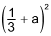
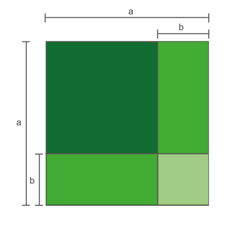
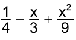
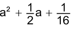

Hoje existem mais de 100 raças de cavalos em todo o mundo. A gestação de uma égua dura aproximadamente 11 meses. Meia hora após o nascimento, o potro já está de pé e se aconchegando à mãe para a sua primeira mamada.
Normalmente, o veterinário faz o acompanhamento do “peso” desse animal. Para calcular o aumento do “peso” de um mês para o outro, pode-se utilizar a relação , sendo que m representa o “peso” inicial do potro, p o percentual de aumento do “peso” mensal e n a quantidade de meses.
- Um veterinário pesou um potro e este encontra-se com 50 kg. Sabendo-se que o “peso” desse animal aumenta 20% ao mês, qual será o seu “peso” após 1 mês?
- Qual é a relação que nos permite calcular o “peso” desse animal após 2 meses? Qual será o seu “peso”?
- A expressão representa um produto notável. Como podemos resolvê-lo?
Cavalos. Reino Unido, 2020.
Quadrado da soma de dois termos
Algumas multiplicações de polinômios aparecem com frequência em problemas e apresentam um padrão em seus resultados, por isso são denominados produtos notáveis. Vamos estudá-los a seguir.
- Reproduza as figuras geométricas que se encontram nos anexos do livro, em uma folha de papel A4. Recorte, troque ideias com um colega e montem um quadrado, que deverá ser colado no caderno.
- Calculem a área do quadrado formado, mostrando duas formas diferentes de se obter esse resultado.
Note que para calcularmos a área do quadrado formado procedemos de duas formas diferentes.
Agora, observe o quadrado maior formado a seguir. Podemos calcular a sua área de duas maneiras distintas:
- 1.ª maneira: calcular a área de cada figura geométrica e adicioná-las.
a2 + ab + ab + b2 = a2 + 2ab + b2
- 2.ª maneira: calcular a área do quadrado maior utilizando a medida do seu lado a + b.
Veja que (a + b)2 = a2 + 2ab + b2. O quadrado da soma de dois termos é um produto notável.
Vamos observar outras situações em que temos o quadrado da soma de dois termos.
- (a + 5)2 = (a + 5) ∙ (a + 5) = a2 + 5a + 5a + 25 = a2 + 10a + 25
- (b + c)2 = (b + c) ∙ (b + c) = b2 + bc + bc + c2 = b2 + 2bc + c2
- (4 + m)2 = (4 + m) ∙ (4 + m) = 16 + 4m + 4m + m2 = 16 + 8m + m2
- (2x + 3y)2 = (2x + 3y) ∙ (2x + 3y) = 4x2 + 6xy + 6xy + 9y2 = 4x2 + 12xy + 9y2
- Troque ideias com um colega e expliquem o padrão que podemos notar nos resultados dos produtos anteriores. Anotem, no caderno, a conclusão a que vocês chegaram.
- Escreva, em seu caderno, o polinômio que representa a área de cada figura.
- Na figura a seguir, a área do quadrado ABCD é 4x2 cm2 e do quadrado DEFG é 9y2 cm2.
- Qual é a medida do lado do quadrado ABCD?
- Qual é a medida do lado do quadrado DEFG?
- Qual é a área do quadrado HFIB?
- Calcule no caderno:
- (x + 7)2
- (3y + 5)2
- (6m + 2n)2
- (a3 + 4)2
- (x4 + y2)2
- (y + 0,3)2
- 
-
- Simplifique as expressões a seguir, no caderno.
- (x + 4)2 + (x + 3)2
- (y + 3)2 - (y + 1)2
- 8x + (5x + 2)2
- y(y + 6)2 - (7 + y)2
- Observe:
512 = (50 + 1)2 =
= 502 + 2 ∙ 50 ∙ 1 + 12 =
= 2 500 + 100 + 1 =
= 2 601
Calcule mentalmente:
- 342
- 722
- 182
- 622
- Sabendo que x2 + y2 = 5 e xy = 2, calcule o valor de (x + y)2.
- Sendo M = (y + 2)2 e N = (y + 5)2, determine:
- M - N
- M + N
- (OBMEP) Na figura dada, temos dois quadrados. O lado do maior mede a + b e o do menor a. Qual é a área da região cinza destacada?
- b
- a + b
- a2 + 2ab
- b2
- 2ab + b2
- (OBMEP) Se x + y = 8 e xy = 15, qual é o valor de x2 + 6xy + y2?
- 64
- 109
- 120
- 124
- 154
Quadrado da diferença de dois termos
Observe a figura a seguir:

- A figura é formada por dois quadrados e dois retângulos. Troque ideias com um colega e escrevam, no caderno, as expressões que representam as medidas dos lados de cada quadrado e cada retângulo que formam a figura.
- Escrevam as expressões que representam a área de cada um dos quadrados e retângulos que compõem a figura.
- Escrevam o trinômio que representa a área do quadrado verde escuro.
Veja que (a - b)2 = a2 - 2ab + b2. O quadrado da diferença de dois termos é um produto notável.
Vamos observar outras situações em que temos o quadrado da diferença de dois termos.
- (x - 3)2 = (x - 3) ∙ (x - 3) = x2 - 3x - 3x + 9 = x2 - 6x + 9
- (5 - y)2 = (5 - y) ∙ (5 - y) = 25 - 5y - 5y + y2 = 25 - 10y + y2
- (b - c)2 = (b - c) ∙ (b - c) = b2 - bc - bc + c2 = b2 - 2bc + c2
- (2x - 4y)2 = (2x - 4y) ∙ (2x - 4y) = 4x2 - 8xy - 8xy + 16y2 = 4x2 - 16xy + 16y2
Podemos notar um padrão nos resultados dos produtos acima.
- Troque ideias com um colega e expliquem o padrão existente nos resultados. Anotem, no caderno, a conclusão a que vocês chegaram.
- Escreva, em seu caderno, a expressão que representa a área da região colorida em cada figura.
- Calcule no caderno:
- (x - 5)2
- (2y - 7)2
- (3m - 6n)2
- (a5 - 4)2
- (x3 - y7)2
- (y - 0,2)2
-
- Simplifique as expressões a seguir em seu caderno.
- (x - 2)2 + (x - 3)2
- (m - 3)2 - (m - 5)2
- 10x + (8x - 1)2
- y(y - 2)2 - (12 - y)2
- Observe:
392 = (40 - 1)2 =
= 402 - 2 ∙ 40 ∙ 1 + 12 =
= 1 600 - 80 + 1 =
= 1 521
Calcule mentalmente:
- 262
- 192
- 482
- 572
- Sabendo que x2 + y2 = 38 e xy = 9, calcule o valor de (x - y)2.
- Sendo M = (y + 3)2 e N = (y - 6)2, determine:
- M - N
- M + N
- Determine a área que representa a região colorida da figura.
Produto da soma pela diferença de dois termos
Observe a figura a seguir:
- Troque ideias com um colega e escrevam, no caderno, a expressão que representa a área da região mais escura da figura I.
- Ao recortarmos o retângulo de lados b e a – b da figura II e o reposicionarmos ao lado do retângulo de lados a e a – b, formamos a figura III. Vejam que a figura III tem a mesma área que a parte mais escura da figura I. Com as medidas indicadas na figura III, escrevam a expressão que indica a sua área.
Veja que (a + b)(a - b) = a2 - b2. O produto da soma pela diferença de dois termos é um produto notável.
Vamos observar outras situações em que temos o produto da soma pela diferença de dois termos.
- (x + 6)(x - 6) = x2 - 6x + 6x - 36 = x2 - 36
- (7 + y)(7 - y) = 49 - 7y + 7y - y2 = 49 - y2
- (2b + c)(2b - c) = 4b2 - 2bc + 2bc - c2 = 4b2 - c2
- (0,5 + m)(0,5 - m) = 0,25 - 0,5m + 0,5m - m2 = 0,25 - m2
Podemos notar um padrão nos resultados dos produtos acima.
- Troque ideias com um colega e expliquem o padrão existente nos resultados. Anotem, no caderno, a conclusão a que vocês chegaram.
- Escreva, no caderno, uma expressão que represente a área da região colorida.
- Calcule as expressões a seguir no caderno.
- (m + 5)(m - 5)
- (x3 + y)(x3 - y)
- (b - 3)(b + 3)
- (10 - 4x)(10 + 4x)
- (0,7 + y)(0,7 - y)
-
- Observe:
19 ∙ 21 =
= (20 - 1)(20 + 1) =
= 400 - 1 = 399
Calcule mentalmente:
- 29 ∙ 31
- 42 ∙ 38
- 53 ∙ 47
- 61 ∙ 59
- Resolva as expressões a seguir em seu caderno:
- (x + 3)(x - 3) + (x + 2)2
- 7y - (y - 4)2 + (y + 5)(y - 5)
- (xy - 1)2 + (xy + 1)(xy - 1) - (xy - 1)2
- Sabendo que m2 - n2 = 56 e m - n = 4, determine:
- o valor de m + n;
- o valor de m;
- o valor de n.
- Se x + y = 18 e x - y = 4, calcule o valor de x2 - y2.
- Em seu caderno, escreva os pares que podemos formar com os produtos e polinômios dados.
- (x + 7)2
- (5x - 3)2
- (x + 8)(x - 8)
- (5x + 3)2
- (x + 2)(x - 2)
- (x - 7)2
I) x2 - 64
II) x2 - 14x + 49
III) 25x2 - 30x + 9
IV) x2 - 4
V) x2 + 14x + 49
VI) 25x2 + 30x + 9
- Determine o valor numérico da expressão (x + 2)2 - (x + 2)(x - 2) + (x - 1)2 para x = 15.
- Jogo da memória: vamos jogar? Convide um colega, reproduzam as cartas que estão nos anexos e divirtam-se. Neste jogo, cada carta tem um par. Você e seu colega deverão posicionar todas as cartas viradas para baixo sobre a mesa, para que não possam ser vistas.
Cada participante, na sua vez, deverá virar duas cartas e verificar se elas formam um par. Caso formem, o participante deverá recolher essas cartas consigo e jogar novamente. Se as cartas não formarem um par, deverão ser viradas novamente, passando, assim, a vez para o outro participante. Vence o jogo quem obtiver a maior quantidade de pares.
Reinaldo Rosa/Acervo da Editora
Fator comum em evidência
- Os números acima podem ser fatorados. Troque ideias com um colega e, no caderno, escrevam o que significa fatorar um número.
- Em seguida, fatorem os números dados em fatores primos.
Acabamos de relembrar como realizar a fatoração de um número em fatores primos. Agora, veremos como fatorar um polinômio. Estudaremos as seguintes situações.
Situação 1
Vamos escrever a expressão que representa a área da figura de duas maneiras diferentes:
- 1.ª maneira: representar a área de cada polígono que compõe a figura e adicioná-las.
4a + 4b
- 2.ª maneira: fazer o produto da medida do comprimento pela medida da largura do polígono.
4 ∙ (a + b) = 4a + 4b
Note que o polinômio 4a + 4b pode ser escrito na forma de um produto. Temos que 4 ∙ (a + b) é a forma fatorada de 4a + 4b, sendo que 4 é um fator comum nos dois termos do polinômio 4a + 4b.
Situação 2
Vamos representar o polinômio 25xy + 5xz na forma fatorada colocando em evidência os fatores que são comuns.
Nesse caso, o fator comum aos dois termos do polinômio 25xy + 5xz é 5x. Temos que 5x é divisor comum de 25xy e 5xz. Então:
Observe outros exemplos de fatoração com o fator comum em evidência:
c) 7x2 + 6x4 - 3x = x (7x + 6x3 - 3)
d) 12x (a + 1) + 13y (a + 1) = (a + 1) (12x + 13y)
e)
f) y8 - y7 = y7 (y - 1)
Observe os números a seguir.
Reinaldo Rosa/Acervo da Editora
- Em seu caderno, escreva a área das figuras a seguir na forma de produto.
- Escreva, em seu caderno, a forma fatorada dos números:
- 130
- 88
- 244
- 192
- Observe a seguir a forma fatorada de alguns números. Descubra quais são os números.
- 2 ∙ 32 ∙ 5
- 22 ∙ 33
- 32 ∙ 5 ∙ 7
- 2 ∙ 11 ∙ 13
- Colocando o fator comum em evidência, fatore os polinômios.
- ab + bc
- 6x + 6y + 6z
- 3m3 - 6n
- 11y4 - 5y2
- 8 - 12a + 16b
-
- y(x + 2) + 3(x + 2)
- a(b - 7) - c(b - 7)
- m(n + 2) - p(n + 2) + q(n + 2)
- Sabendo que a + b + c = 75 e x - y = 12, calcule o valor numérico da expressão a(x - y) + b(x - y) + c(x - y).
Agrupamento
Vamos estudar agora outro exemplo de fatoração, em que utilizaremos os conhecimentos adquiridos anteriormente.
Observe o seguinte polinômio: 3x + 5x + 3y + 5y.
Neste polinômio, não há um fator comum a todos os termos, porém, temos um fator que é comum ao 1.º e 2.º termos e outro que é comum ao 3.º e 4.º. Sendo assim, vamos colocá-los em evidência.
Note que surge um fator que é comum aos dois termos. Colocando-o em evidência, temos:
Observe outros exemplos de fatoração por agrupamento:
- 7x + 7y + mx + my = 7(x + y) + m(x + y) = (x + y)(7 + m)
- 11a - 11b + ac - bc = 11(a - b) + c(a - b) = (a - b)(11 + c)
- ab + ac - by - cy = a(b + c) - y(b + c) = (b + c)(a - y)
- x2 - x + ax - a = x(x - 1) + a(x - 1) = (x - 1)(x + a)
- Fatore, em seu caderno, os polinômios a seguir.
- 8m + 8n + pm + pn
- 11x - 11y + ax - ay
- b2 - b + by - y
- c3 + cd - mc2 - md
-
- Observe a figura.

- Escreva o polinômio que representa a área da figura.
- Qual é a forma fatorada deste polinômio?
- Determine o valor da expressão
ax - a - x + 1, sabendo que x - 1 = 12 e a - 1 = 8.
- Se x + y = 25 e z + z2 + xy = 21, determine o valor numérico da expressão
xz + yz + z2x + z2y + x2y + y2x.
- Fatore os polinômios a seguir em seu caderno.
- x2 - 81
- x2y2 - 4x2
- 1 - 36b4
- c6 - y8
-
- Escreva os polinômios que representam as partes coloridas das figuras. Em seguida, represente as formas fatoradas de cada um.
- Observe:
- 7x2 - 7y2 = 7(x2 - y2) = 7(x + y)(x - y)
Agora, no caderno, fatore completamente os polinômios a seguir.
- 12m5 - 3m3n2
- y3 - 16y
- b2c - c
- m4 - 16
- c4 - 1
- 81 - y8
- Se x + y = 13 e x - y = 4, determine o valor numérico da expressão
11x2 - 11y2.
- Observe:
- (x + 3)2 - 25 =
= [(x + 3) + 5][(x + 3) - 5] =
= (x + 3 + 5)(x + 3 - 5) =
= (x + 8)(x - 2)
De acordo com o exemplo, fatore os seguintes polinômios.
- (a - b)2 - 16
- 49 - (x + 5)2
- (a + b)2 - (a - b)2
- (3 - x)2 - (4 + x)2
- Identifique entre as afirmações a seguir quais são verdadeiras.
- Fatorando o polinômio 9y2 + 36, obtemos (3y + 6)(3y - 6).
- A forma fatorada do polinômio
25x2 - 5x é 5x(5x - 1). - O produto (8x2y2 + 3y)(8x2y2 - 3y) é a forma fatorada do polinômio 64x4y4 - 9y2.
Diferença de dois quadrados
Observe o retângulo a seguir:
A área deste retângulo é representada pelo produto (a - b)(a + b). Resolvendo-se este produto notável, temos:
(a - b)(a + b) = a2 - b2
Portanto, a forma fatorada do polinômio é a2 - b2 é (a - b)(a + b).
Observe a forma fatorada de outros polinômios que representam a diferença de dois quadrados:
- x4 - y6 = (x2 + y3)(x2 - y3)
- 25 - b4 = (5 + b2)(5 - b2)
- c2 - 49 = (c + 7)(c + 7)
Trinômio quadrado perfeito
Vamos representar a área da figura a seguir.
A sua área pode ser determinada por
(a + b)(a + b).
Estudamos anteriormente que este é um produto notável.
(a + b)(a + b) = (a + b)2 = a2 + 2ab + b2
O polinômio a2 + 2ab + b2 é denominado de trinômio quadrado perfeito e sua forma fatorada é (a + b)2.
Vamos agora escrever o polinômio que representa a área da região colorida da figura a seguir.
A sua área pode ser determinada por (a - b)(a - b).
Este produto representa um produto notável.
(a - b)(a - b) = (a - b)2 = a2 - 2ab + b2
O polinômio a2 - 2ab + b2 também é chamado de trinômio quadrado perfeito e sua forma fatorada é (a - b)2.
Atenção!
Nem sempre um trinômio é quadrado perfeito. Para isso, ele deve ter dois termos elevados ao quadrado e um (positivo ou negativo) que seja o dobro do produto dos termos que foram elevados ao quadrado. Observe:
Observe a forma fatorada de outros polinômios que são quadrados perfeitos:
- x2 + 10x + 25 = (x + 5)2
- b2 - 14b + 49 = (b - 7)2
- m4 + 2m2n2 + n4 = (m2 + n2)2
- Copie, em seu caderno, os polinômios que são trinômios quadrados perfeitos.
- x2 + 8x + 16
- 25 - 2x + x2
- m2n2 - 2mn + 1
- b2 + 14b + 49
- 36x2 + 12xy + y2
- c4 - cd + d4
- Nas figuras a seguir, represente as áreas das partes coloridas por meio de adições de polinômios e fatore-os.
- Determine o lado de um quadrado cuja área é representada pelo polinômio
x2 + 6x + 9.
- Fatore, no caderno, os polinômios a seguir.
- x2 + 12x + 36
- y4 - 14y2 + 49
- 9x2 + 6x + 1
- 1 - 10y + 25y2
- 
- 
- Agora, fatore completamente os polinômios.
- 5x2 + 20x + 20
- ab4 - 6ab2 + 9a
- 8x3 + 16x2 + 8x
- -3x2 - 12x - 12
Probabilidade e estatística
- Calcule os seguintes produtos notáveis em seu caderno:
- (3y3 - 8xy)2
- (m4 + n3)(m4 - n3)
-
- (PUC-SP) A expressão (2a + b)2 - (a - b)2 é igual a:
- 3a2 + 2b2
- 3a2 + 6ab
- 4a2b + 2ab2
- 4a2 + 4ab + b2
- Sendo m4 + n4 = 10 e mn = 6, determine o valor de (m2 - n2)2.
- (FCC-SP) A expressão (x - y)2 - (x + y)2 é equivalente a:
- 0
- -2y2
- 2y2
- -4xy
- (PUC-SP) A expressão (x + y)(x2 + y2)(x - y) é igual a:
- x4 + y4
- x4 - y4
- x3 + xy2 - x2y - y3
- x3 + xy2 + x2y + y3
- Fatore os polinômios a seguir.
- 15x + 15y + 30z
- b2 + bx + bc + cx
- y2 + 22y + 121
- 169 - x2y2
- a3 - 7a2 - 3a + 21
- 8(x + y) - b(x + y)